This project aims to analyze data obtained from the YÖK Atlas platform by examining universities, academics, departments, and regional distributions. Based on the analyzed data, the objectives include creating future projections, comparing universities from various perspectives, and identifying trending departments.
The main goal is to apply R to conduct a deep analysis that reveals trends in Turkish higher education.
Potential Analyses
Based on the available variables, the following analyses are planned:
Comparison of the number of state and private universities by region,
University density by city,
Student flows from regions to universities,
Minimum and maximum entrance scores by department,
Gender distribution (female–male) by department within universities,
Comparison of the number of academics in state and private universities,
Yearly trends in placement scores and quotas,
📊 Data
Within the scope of the project, two different datasets will be used in order to conduct more detailed analyses. One of them is obtained from https://github.com/analyticsresearchlab/thestats. Here, “thestats” package, has been developed by Mustafa Cavus and Olgun Aydin from the YÖK Atlas platform (yokatlas.yok.gov.tr), which provides comprehensive statistics on Turkish higher education. It provides a structured interface from YÖK Atlas covering the period from 2018 to 2020 that includes placement scores, student gender distribution, regional origins of students, academic staff counts, and department preference rankings.
The other dataset is directly obtained from YÖK Atlas (yokatlas.yok.gov.tr), the official university placement and statistics platform maintained by Turkey’s Council of Higher Education (YÖK). The dataset spans 2022 to 2025, with detailed placement data for all undergraduate programs in Turkey, including scores, rankings, quotas, and enrollment figures.
These datasets are appropriate for the project as they are large, structured, and contain multiple variables that enable comprehensive analysis.
1 Data Source
1.1 General Information About Data
“Thestats” dataset includes information such as entrance scores, ranking positions, quotas, student demographics, and program-specific characteristics across different universities and departments. The dataset contains 25,652 rows and 23 columns, covering three academic years (2018, 2019, 2020) and all universities and departments across Turkey.
The YÖK Atlas dataset contains 1,109 records across 12 variables, capturing program-level placement information for engineering departments in Turkish universities, including university name, department, city, university type (public/private/KKTC/abroad), scholarship status, teaching format, quota, number of enrolled students, success ranking (TBS), and base score — with historical values available for each program across 2022–2025.
1.2 Reason of Choice
This topic is selected due to its relevance to higher education decision-making and its potential to provide insights for students and academic institutions.
1.3 Preprocessing
The first data is imported into R using the “thestats” package. The data was imported directly into R using the list_uni(), list_dept(), and list_score() functions from the package. No raw file download (xlsx, csv) was required, as the package provides ready-to-use query functions. Several preprocessing steps were applied before analysis.
Preprocessing Steps:
Type conversion: Converting data into appropriate formats (e.g., numeric, categorical). All numeric columns were stored as character strings with Turkish decimal separators (comma instead of period). The gsub() function is used to replace commas with periods, followed by as.numeric() conversion.
Missing value handling: Some cells contained “—” instead of numeric values, indicating missing or unreported data. Replacement with NA values. Also rows with NA columns were removed on a per-analysis basis to preserve as much data as possible.
Filtering: Filtering relevant years or departments
New Variables: Creating new variables if necessary (e.g., grouping universities by type or region)
The other dataset collected using the “yokatlas-py” Python package, integrated into R via the reticulate library.
Preprocessing Steps:
Flattening nested data: API responses is returned as nested Python lists and converted into a structured tabular dataframe using a custom parse_row() function combined with bind_rows().
Type conversion: Numeric fields such as quota, enrollment, base score, and success ranking were explicitly cast to numeric. Composite quota fields formatted as “15+0+2” were parsed using regex to extract only the primary figure.
Character encoding: Turkish-specific characters returned as Unicode escape sequences (e.g. \u00fc) were decoded using stri_unescape_unicode().
Filtering: Records with missing base scores or quotas, distance-learning programs, and programs with zero enrollment were excluded, reducing the dataset from 1,109 to 814 records.
Grouping: A categorical grouping variable is created distinguishing between public universities, funded private universities, and fee-paying private universities to enable meaningful comparisons across institutional types.
Planned analyses include cross-department score comparisons, public versus private university differences, city-level distributions, year-on-year trend analysis, score forecasting for 2026, and university prestige rankings based on success rankings.
🧭Analysis
1. University Distribution and Regional Density
1.1 Number of Universities by Region
Dataset: theStats | Year: All years (cumulative)
Show Code
uni_data <-list_uni(region_names ="all", city_names ="all")region_uni <- uni_data %>%group_by(region) %>%summarise(count =n()) %>%arrange(desc(count))ggplot(region_uni, aes(x =reorder(region, count), y = count)) +geom_col(fill ="steelblue") +coord_flip() +theme_minimal() +labs(title ="Number of Universities by Region",x ="Region", y ="Number of Universities")
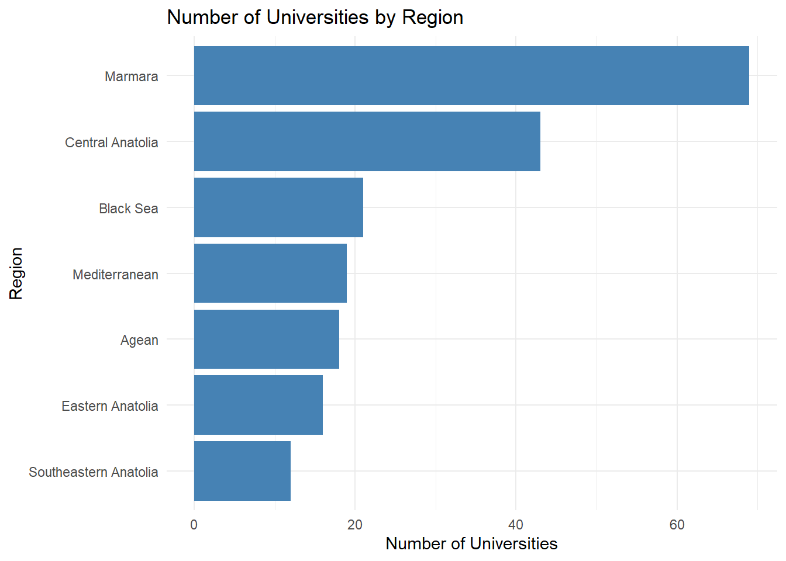
The distribution of universities across regions reveals significant disparities. Marmara and Central Anatolia host the highest number of universities, indicating a concentration of higher education institutions in economically developed areas. Eastern regions have relatively fewer universities, suggesting inequalities in access to higher education.
1.2 State vs. Private Universities by Region
Dataset: theStats | Year: All years (cumulative)
Show Code
region_type <- uni_data %>%group_by(region, type) %>%summarise(count =n(), .groups ="drop")region_order <- region_type %>%group_by(region) %>%summarise(total =sum(count)) %>%arrange(desc(total))region_type$region <-factor(region_type$region, levels = region_order$region)ggplot(region_type, aes(x = region, y = count, fill = type)) +geom_col(position ="dodge") +coord_flip() +scale_x_discrete(limits =rev(levels(region_type$region))) +theme_minimal() +labs(title ="University Distribution by Region (State / Private)",x ="Region", y ="Number of Universities", fill ="Type")
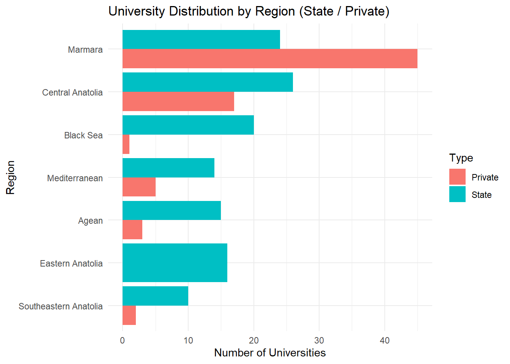
State universities dominate across almost all regions, while private universities are more concentrated in economically developed areas such as Marmara and Central Anatolia.
1.3 Top 15 Cities by Number of Universities
Dataset: theStats | Year: All years (cumulative)
Show Code
city_uni <- uni_data %>%group_by(city) %>%summarise(count =n()) %>%arrange(desc(count)) %>%slice(1:15)ggplot(city_uni, aes(x =reorder(city, count), y = count)) +geom_col(fill ="steelblue") +coord_flip() +theme_minimal() +labs(title ="Top 15 Cities by Number of Universities",x ="City", y ="Number of Universities")
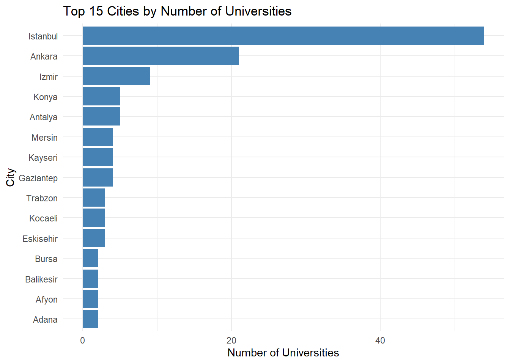
Istanbul, Ankara, and Izmir lead the ranking, indicating a strong centralization of higher education institutions in large metropolitan areas.
The chart displays the top 10 highest and bottom 10 lowest-scoring departments based on median placement scores across all Turkish universities, with a minimum of 30 programs per department to ensure statistical reliability. Pilotage, Medicine, and Dentist/Dentistry dominate the high end, reflecting the highly competitive nature of health and aviation fields. Notably, Dentist and Dentistry appear separately due to minor naming inconsistencies in the dataset — they effectively represent the same field. On the lower end, departments such as Archaeology, Finance and Banking, and Philosophy show median scores around 220–236, indicating lower competition thresholds. Date (IO)” refers to the History department’s second-shift (evening) program, which consistently attracts lower placement scores due to its paid and part-time nature — distinct from the English-medium History program appearing in the high-scoring group. The wide gap between high (~430–493) and low (~211–236) scoring departments highlights the stark selectivity differences across disciplines in Turkish higher education.
2.2 Score Range (Min-Max) by Department (Top 10)
Dataset: theStats | Year: All years (cumulative)
Show Code
library(thestats)score_data_x1416 <-list_score(region_names ="all",university_names ="all",department_names ="all",var_ids =c("X14", "X16"))score_clean2 <- score_data_x1416 %>%filter(X14 !="---", X16 !="---") %>%mutate(X14 =as.numeric(gsub(",", ".", X14)),X16 =as.numeric(gsub(",", ".", X16)),dept_clean = department %>%str_remove_all("\\s*\\(English\\)|\\s*\\(French\\)|\\s*\\(Scholarship\\)") %>%str_remove_all("\\s*\\(Paid\\)|\\s*\\(Distance Education\\)|\\s*\\(Acikogretim\\)") %>%str_remove_all("\\s*\\([0-9]+%\\s*Discount\\)|\\s*\\(High School\\)") %>%str_remove_all("\\s*\\(Faculty\\)") %>%str_squish() ) %>%filter(!is.na(X14), !is.na(X16),nchar(dept_clean) >=5,!str_detect(dept_clean, "^(Type|T[uü]r|Program|B[oö]l[uü]m)$") )score_summary2 <- score_clean2 %>%group_by(dept_clean) %>%summarise(n_prog =n(),med_taban =median(X14, na.rm =TRUE),p10_taban =quantile(X14, 0.10, na.rm =TRUE),p90_tavan =quantile(X16, 0.90, na.rm =TRUE),.groups ="drop" ) %>%filter(n_prog >=30) %>%arrange(desc(med_taban)) %>%slice(1:10)score_summary2 %>%ggplot() +geom_segment(aes(x =reorder(dept_clean, med_taban),xend =reorder(dept_clean, med_taban),y = p10_taban, yend = p90_tavan),color ="gray60", linewidth =1.2) +geom_point(aes(x =reorder(dept_clean, med_taban), y = p10_taban),color ="#e74c3c", size =3) +geom_point(aes(x =reorder(dept_clean, med_taban), y = med_taban),color ="gray20", size =2.5, shape =18) +geom_point(aes(x =reorder(dept_clean, med_taban), y = p90_tavan),color ="#2ecc71", size =3) +coord_flip() +theme_minimal() +labs(title ="Placement Score Range by Department (Top 15 by Median)",subtitle ="Red = 10th pct | Diamond = median | Green = 90th pct | min. 30 programs",x ="Department", y ="Placement Score",caption ="Language/fee suffixes removed from department names")
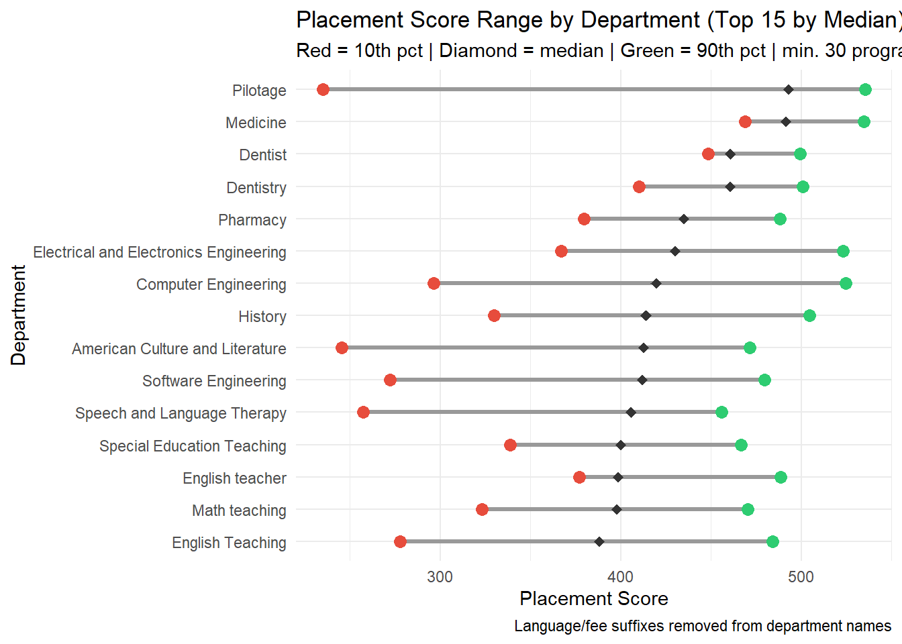
This chart shows the realistic placement score spread for the top 10 departments by median score. Each line spans from the 10th percentile threshold score (red dot) to the 90th percentile ceiling score (green dot), with the diamond marking the median. Departments like Pilotage and Computer Engineering show wide ranges — meaning the same department varies dramatically in selectivity depending on the university. For example, Computer Engineering’s red dot sits near 290 while its green dot exceeds 530, a spread of over 240 points. In contrast, Medicine and Dentistry show narrower ranges, suggesting more uniform selectivity across institutions. These patterns confirm that institutional prestige is the primary driver of score variation within a given field.
A clear hierarchy exists among engineering departments. Computer, industrial and electrical-electronics engineering rank at the top, while Wood Products Industrial Engineering and Aquaculture Engineering show wider score ranges, reflecting their presence in both prestigious and less competitive universities.
2.4 Industrial Engineering - University Ranking (Lollipop)
State universities dominate the upper half of the ranking. Scholarship-based private universities compete closely with state universities in certain programs, while fee-paying private programs cluster in lower score bands.
State universities significantly outnumber private universities in academic staff across all titles, reflecting their deeper institutional research capacity.
3.2 State vs. Private Score Comparison - Industrial Engineering (Boxplot)
State and scholarship-based private universities compete in similar score ranges, while fee-paying private programs have a noticeably lower median, suggesting they serve as fallback options for students who could not meet score thresholds.
3.3 State vs. Private Annual Score Trend - All Engineering
Dataset: YOKAtlas | Year: 2022-2025
Show Code
trend_df_endustri <-bind_rows(lapply(raw, function(p) { taban <- p$tabanif (is.null(taban)) return(NULL)tibble(universite =stri_unescape_unicode(p$uni_adi %||%NA_character_),uni_turu =stri_unescape_unicode(p$universite_turu %||%NA_character_),ucret_burs =stri_unescape_unicode(p$ucret_burs %||%NA_character_),yil_t =names(taban),taban_puan =suppressWarnings(as.numeric(unlist(taban))) )})) %>%filter(!is.na(taban_puan), taban_puan >0) %>%mutate(grup =case_when(str_detect(ucret_burs, "cretsiz") ~"State (Free)",str_detect(ucret_burs, "Burslu") ~"Private (Scholarship)",str_detect(ucret_burs, "ndirimli") ~"Private (50% Discount)",str_detect(ucret_burs, "cretli") &!str_detect(ucret_burs, "cretsiz") ~"Private (Fee-paying)" ))trend_df_endustri %>%filter(!is.na(grup)) %>%group_by(yil_t, grup) %>%summarise(avg =mean(taban_puan, na.rm =TRUE), .groups ="drop") %>%ggplot(aes(x = yil_t, y = avg, color = grup, group = grup)) +geom_line(linewidth =1.2) +geom_point(size =3.5) +geom_text(aes(label =round(avg, 1)), vjust =-0.8, size =3) +scale_color_manual(values =c("State (Free)"="steelblue","Private (Scholarship)"="coral","Private (50% Discount)"="orange","Private (Fee-paying)"="gray50" )) +theme_minimal() +theme(legend.position ="bottom") +labs(title ="Annual Average Score Trend by University Type - All Engineering",x ="Year", y ="Average Base Score", color ="")
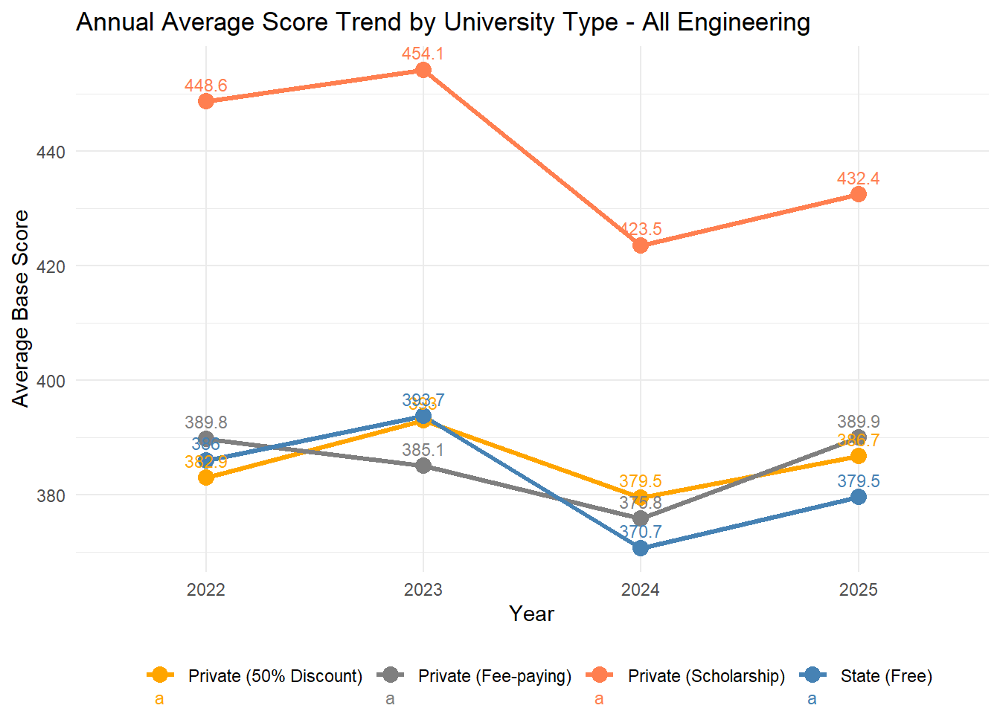
Private scholarship programs consistently show the highest average scores, though with notable year-to-year fluctuation. State universities maintain a stable upward trend, while fee-paying and discounted private programs cluster at the lower end with similar score profiles. The 2024 dip across all categories likely reflects a system-wide shift in exam scoring or quota changes.
4. Quota, Enrollment and Preference Analysis
4.1 Top 15 Universities by First-Choice Preference Count
Established state universities in Istanbul and Ankara dominate first-choice preferences, reflecting the importance of geographic proximity and institutional prestige in student decision-making.
4.2 Quota Fill Rate Distribution - Industrial Engineering
Dataset: YOKAtlas | Year: 2025
Show Code
df_endustri_temiz %>%mutate(fill_rate = yerlesen / kontenjan *100) %>%filter(!is.na(fill_rate), fill_rate >0) %>%ggplot(aes(x = fill_rate)) +geom_histogram(binwidth =5, fill ="coral", color ="white") +geom_vline(xintercept =100, linetype ="dashed", color ="red") +theme_minimal() +labs(title ="Quota Fill Rate Distribution (%) - Industrial Engineering 2025",x ="Fill Rate (%)", y ="Number of Programs")
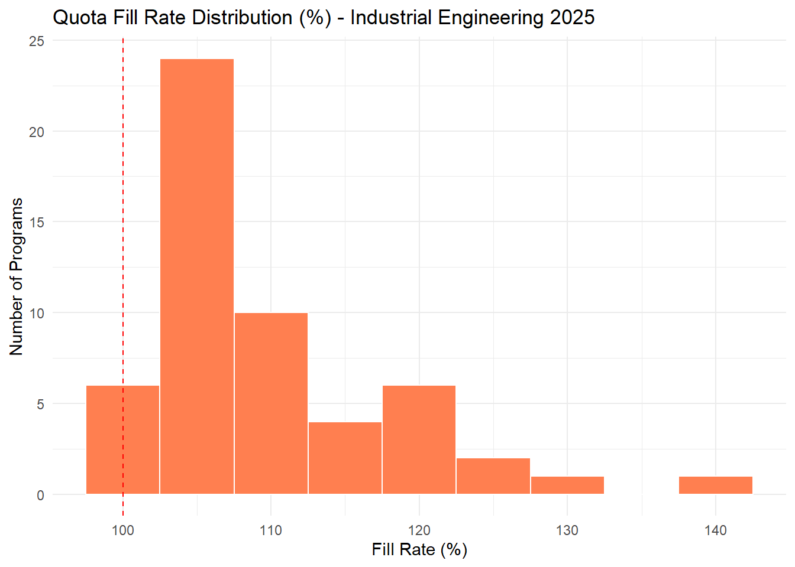
The majority of programs have a fill rate between 80-100%, indicating strong demand for Industrial Engineering. Programs exceeding 100% reflect cases where waitlist students were enrolled.
4.3 Total Quota vs. Fill Rate by Engineering Department (Bubble Chart)
Dataset: YOKAtlas | Year: 2025
Show Code
bubble_data <- df_muh_temiz %>%group_by(bolum) %>%summarise(total_quota =sum(kontenjan, na.rm =TRUE),avg_fill =mean(doluluk, na.rm =TRUE),avg_score =mean(taban_puan, na.rm =TRUE),n =n(),.groups ="drop" ) %>%filter(n >=3, !is.na(avg_fill))ggplot(bubble_data, aes(x = total_quota, y = avg_fill, size = n, fill = avg_score)) +geom_point(alpha =0.75, shape =21, color ="white", stroke =0.4) +geom_text(aes(label =str_extract(bolum, "^\\w+"), color = avg_score),vjust =-1.1, size =3, fontface ="bold",check_overlap =TRUE) +geom_hline(yintercept =100, linetype ="dashed", color ="red", alpha =0.6) +scale_fill_gradient(low ="#a8d8ea", high ="#1a4a6e",name ="Avg. Base Score") +scale_color_gradient(low ="#2a7db5", high ="#0a2a4a",guide ="none") +scale_size_continuous(range =c(4, 16),breaks =c(10, 20, 30, 40, 50),name ="No. of Programs") +theme_minimal(base_size =12) +theme(legend.position ="bottom",legend.box ="horizontal",legend.key.width =unit(1.5, "cm"),legend.text =element_text(size =9),plot.title =element_text(face ="bold", size =13),plot.subtitle =element_text(size =10, color ="gray40") ) +guides(fill =guide_colorbar(title.position ="top", barwidth =8, barheight =0.8),size =guide_legend(title.position ="top", override.aes =list(fill ="steelblue")) ) +labs(title ="Total Quota vs. Average Fill Rate by Engineering Department",subtitle ="Bubble size = no. of programs | Color = avg base score | Red dashed = 100% fill",x ="Total Quota", y ="Avg. Fill Rate (%)")
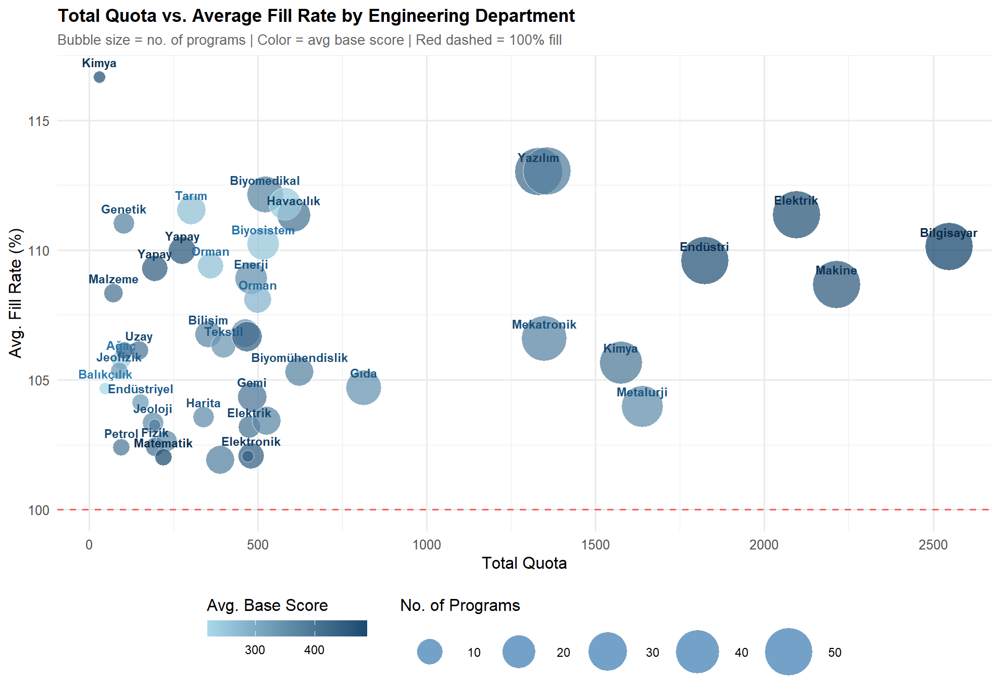
Departments with large quotas and high fill rates signal strong and sustained demand. Higher-scoring departments tend to maintain higher fill rates regardless of quota size.
Universities with the largest academic staff are also the largest state universities in terms of student enrollment and number of departments, signaling strong institutional capacity.
5.2 Gender Distribution by Department (Top 15)
Dataset: theStats | Year: All years (cumulative)
Show Code
score_full_clean %>%filter(!is.na(X21), !is.na(X22)) %>%group_by(department) %>%summarise(female =sum(X21, na.rm =TRUE),male =sum(X22, na.rm =TRUE),total = female + male) %>%arrange(desc(total)) %>%slice(1:15) %>%pivot_longer(cols =c(female, male),names_to ="gender", values_to ="count") %>%ggplot(aes(x =reorder(department, total),y = count, fill = gender)) +geom_col(position ="fill") +coord_flip() +scale_fill_manual(values =c("female"="#e84393", "male"="#3498db")) +scale_y_continuous(labels = scales::percent) +theme_minimal() +labs(title ="Gender Distribution by Department (Top 15)",x ="Department", y ="Proportion", fill ="Gender")
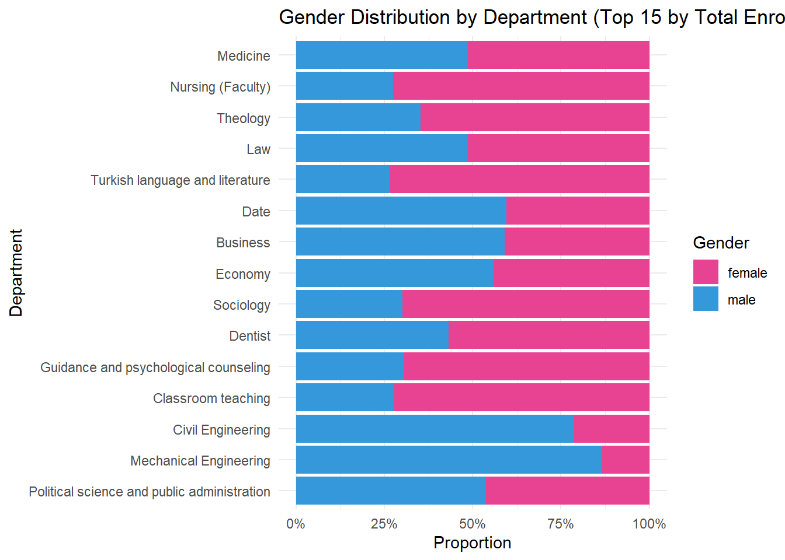
Significant gender imbalances are visible across departments. Engineering fields remain male-dominated, while education, nursing, and social work programs show considerably higher female enrollment rates.
6. Regional Student Flow
6.1 Top Universities by Student Inflow from Each Region
Students largely prefer universities in nearby cities. Istanbul and Ankara attract students from all regions, standing out as nationally dominant higher education hubs.
7. City-Level Analysis
7.1 Average Base Score by City - Industrial Engineering
Dataset: YOKAtlas | Year: 2025
Show Code
df_endustri_temiz %>%group_by(sehir) %>%filter(n() >=2) %>%summarise(avg =mean(taban_puan), n =n(), .groups ="drop") %>%arrange(desc(avg)) %>%ggplot(aes(x =reorder(sehir, avg), y = avg)) +geom_col(fill ="steelblue") +geom_text(aes(label =paste0(round(avg, 1), " (n=", n, ")")),hjust =-0.1, size =3) +coord_flip() +theme_minimal() +labs(title ="Average Base Score by City - Industrial Engineering 2025",x ="", y ="Score") +scale_y_continuous(expand =expansion(mult =c(0, 0.2)))
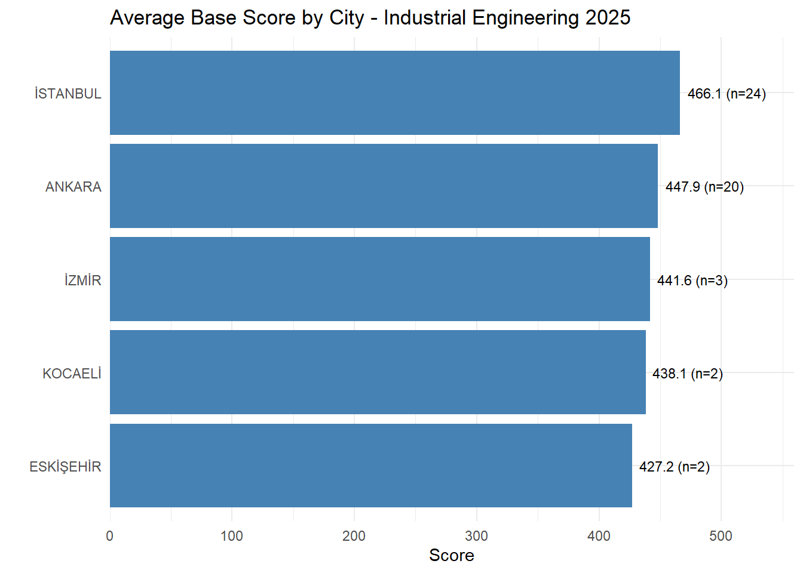
Ankara and Istanbul lead in average scores due to the presence of prestigious universities. In cities with fewer universities, averages are largely driven by the performance of a single institution.
7.2 Average Base Score by City - All Engineering (min 10 programs)
Dataset: YOKAtlas | Year: 2025
Show Code
df_muh_temiz %>%group_by(sehir) %>%summarise(n =n(), avg_score =mean(taban_puan, na.rm =TRUE),total_quota =sum(kontenjan, na.rm =TRUE), .groups ="drop") %>%filter(n >=10) %>%ggplot(aes(x =reorder(sehir, avg_score), y = avg_score, fill = avg_score)) +geom_col() +geom_text(aes(label =paste0(round(avg_score, 0), " (n=", n, ")")),hjust =-0.1, size =2.8) +coord_flip() +scale_fill_gradient(low ="lightblue", high ="steelblue4") +theme_minimal() +theme(legend.position ="none") +labs(title ="Average Base Score by City - All Engineering (min 10 programs) 2025",x ="", y ="Average Base Score") +scale_y_continuous(expand =expansion(mult =c(0, 0.18)))
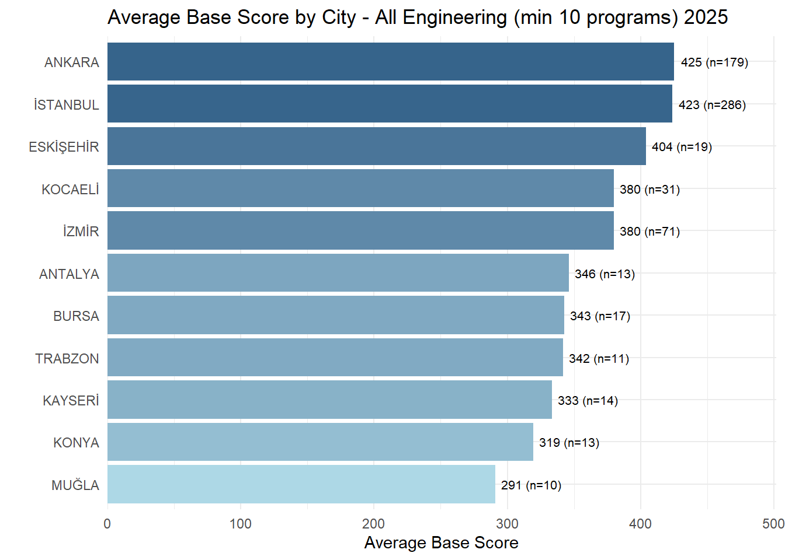
Cities hosting multiple established technical universities consistently show the highest average engineering scores, confirming the role of academic environment and institutional prestige in shaping score levels.
8. Demand Forecasting via Success Ranking (TBS)
Using TBS (success ranking) instead of base scores gives a more reliable picture of demand trends. A falling TBS means more competitive students are choosing that department — i.e. demand is rising. Unlike base scores, TBS has no ceiling, making it better suited for trend analysis.
8.1 Annual TBS Change by Engineering Department (Trend Analysis)
Dataset: YOKAtlas | Year: 2022-2025 | State universities only
Departments with a strongly negative slope are becoming more competitive each year — the students choosing them have increasingly higher national rankings. Departments with a positive slope are seeing reduced competition, which may reflect oversupply or declining labor market interest.
8.2 2026 Forecasted Success Ranking (TBS) by Department
Dataset: YOKAtlas | Year: 2022-2025 (Forecast: 2026) | State universities only
Show Code
tbs_tahmin %>%arrange(desc(tahmin_2026)) %>%# desc ile büyükten küçüğemutate(bolum =str_wrap(bolum, 35),bolum =factor(bolum, levels = bolum),label =format(round(tahmin_2026, 0), big.mark =",") ) %>%ggplot(aes(x = bolum, y = tahmin_2026, fill = tahmin_2026)) +geom_col(width =0.7) +geom_text(aes(label = label), hjust =-0.1, size =3) +coord_flip() +scale_fill_gradient(low ="lightblue", high ="steelblue4", guide ="none") +scale_y_continuous(labels = scales::comma,expand =expansion(mult =c(0, 0.2))) +theme_minimal(base_size =11) +theme(axis.text.y =element_text(size =8.5, lineheight =0.85),panel.grid.major.y =element_blank() ) +labs(title ="2026 Forecasted Success Ranking (TBS) by Engineering Department",subtitle ="State universities only | Lower TBS = more competitive | Top = hardest to enter",x ="", y ="Forecasted TBS (2026)" )
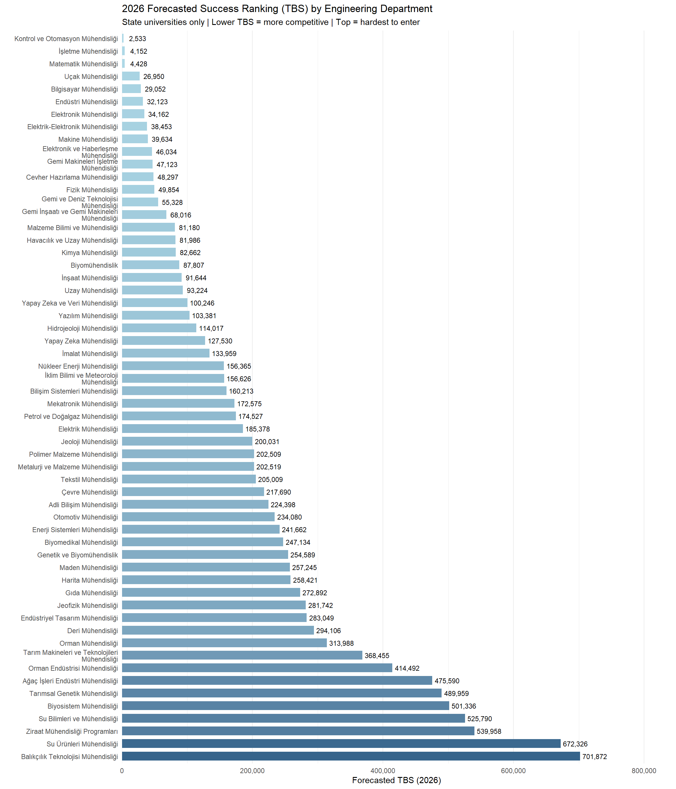
Departments with the lowest forecasted TBS values in 2026 are projected to be the most competitive. Computer, Control & Automation, and Mathematics Engineering top the list, indicating sustained and growing student demand for these fields.
8.3 Top 10 Most Demanded Departments - TBS Trend + 2026 Forecast
Dataset: YOKAtlas | Year: 2022-2025 (Forecast: 2026) | State universities only
Show Code
top10_demand <- tbs_tahmin %>%arrange(tahmin_2026) %>%head(10) %>%pull(bolum)actual_tbs <- tbs_medyan %>%filter(bolum %in% top10_demand) %>%mutate(type ="Actual")forecast_tbs <- tbs_tahmin %>%filter(bolum %in% top10_demand) %>%select(bolum, tahmin_2026) %>%mutate(yil =2026L, med_tbs = tahmin_2026, type ="Forecast")tbs_combined <-bind_rows( actual_tbs, forecast_tbs %>%select(bolum, yil, med_tbs, type))ggplot(tbs_combined, aes(x = yil, y = med_tbs, color = bolum, group = bolum)) +geom_line(linewidth =1.2) +geom_point(aes(shape = type), size =3) +geom_vline(xintercept =2025.5, linetype ="dashed",color ="gray50", alpha =0.5) +annotate("text", x =2025.6,y =max(tbs_combined$med_tbs, na.rm =TRUE),label ="Forecast ->", hjust =0, size =3.5, color ="gray40") +scale_shape_manual(values =c("Actual"=16, "Forecast"=17)) +scale_y_reverse(labels = scales::comma) +scale_x_continuous(breaks =c(2022, 2023, 2024, 2025, 2026)) +scale_color_brewer(palette ="Paired") +theme_minimal(base_size =11) +theme(legend.position ="bottom",legend.text =element_text(size =7)) +guides(color =guide_legend(nrow =4),shape =guide_legend(nrow =4)) +labs(title ="Top 10 Most Demanded Departments - TBS Trend + 2026 Forecast",subtitle ="State universities only | Y-axis reversed: lower = more competitive",x ="Year", y ="Median TBS", color ="", shape ="" )
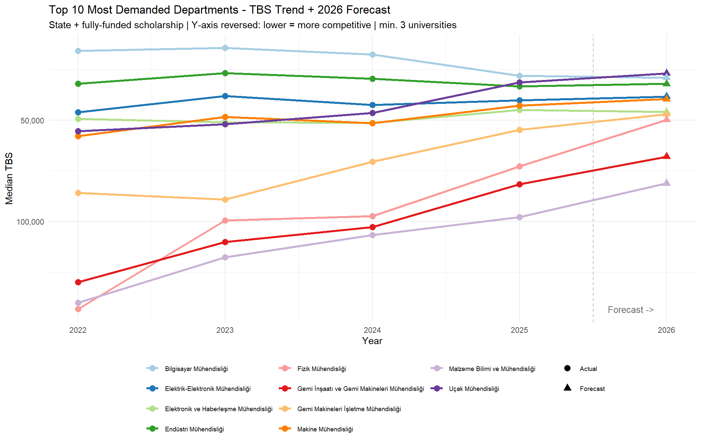
The top 10 departments by projected 2026 TBS show diverging trajectories. While some departments like Computer Engineering maintain relatively stable competitiveness, others such as Control & Automation and Mathematics Engineering show rapid improvement, suggesting growing career prospects in these areas.
9. Prestigious University Comparison
9.1 Top Universities by Engineering Score (Data-Driven)
This ranking is derived entirely from the data — no manual university selection. Universities are ranked by their median engineering placement score, with fee-paying programs excluded to avoid inflation from small high-scoring cohorts. The minimum of 3 departments and 5 programs ensures only institutions with a genuine engineering faculty are included.
9.2 Top 12 Universities x Department Base Score Heatmap
The heatmap reveals which departments are offered across top universities and how scores vary within the same department across institutions. Darker cells indicate higher selectivity. Empty cells highlight departmental specialization — not all top universities offer every engineering field. Only departments shared by at least two universities are shown to keep the chart readable.
9.3 Top 3 Departments per University (Top 12 Universities)
Each top university shows a distinct departmental profile. Computer Engineering and Electrical-Electronics Engineering consistently appear as the highest-scoring programs across multiple institutions. Excluding fee-paying programs ensures the ranking reflects genuine academic selectivity rather than niche high-score cohorts.
4. 💹 Results and Key Takeaways
Regional Distribution & Institutional Landscape
Turkey’s higher education system exhibits a pronounced geographic concentration. The Marmara and Central Anatolia regions host the largest number of universities, while eastern regions remain significantly underrepresented. At the city level, Istanbul, Ankara, and Izmir together account for a disproportionate share of all universities nationwide. State universities dominate across every region, with private institutions clustering almost exclusively in economically developed urban centers. This pattern suggests that access to higher education in Turkey remains heavily shaped by geography and socioeconomic development.
Placement Score Patterns
Across all departments in the theStats dataset, placement scores vary dramatically — from a median of around 211 at the low end to nearly 493 at the high end. Medicine, Pilotage, and Dentistry consistently occupy the highest score bands, reflecting extreme selectivity and limited program capacity. The score range analysis (10th–90th percentile) reveals that the same department can require vastly different scores depending on the university: Computer Engineering, for instance, spans over 240 points between its least and most selective programs. This confirms that institutional prestige, rather than field of study alone, is the primary driver of placement score variation.
Engineering-Specific Findings (YOKAtlas, 2025)
Within the engineering domain, a clear hierarchy exists. Computer Engineering, Electrical-Electronics Engineering, and Industrial Engineering rank at the top by median placement score, while fields such as Aquaculture Engineering and Forestry-related programs sit at the bottom. When broken down by university type, state universities (Ücretsiz) consistently outperform private scholarship programs, which in turn outperform fee-paying private programs — though the gap between state and scholarship tracks is narrower than commonly assumed.
At the program level, METU, ITU, and Bogazici University lead the data-driven prestige ranking, followed closely by Bilkent and Koç among private institutions. The department-level heatmap confirms that top universities maintain uniformly high scores across all their engineering fields, rather than excelling in only one or two areas.
Quota, Enrollment & Student Demand
Industrial Engineering programs show strong fill rates, with the majority achieving 80–100% capacity utilization. Departments exceeding 100% fill rate signal unmet demand and suggest that quota expansions in these fields could improve both access and labor market supply. Across all engineering departments, higher-scoring programs tend to maintain higher fill rates regardless of quota size, reinforcing the link between selectivity and perceived program value.
From the theStats data, universities in Istanbul and Ankara dominate first-choice preferences, reflecting the combined influence of institutional reputation, geographic proximity, and expected employment outcomes. Departments listed early in preference rankings align closely with high-scoring, high-demand fields, while late-preference departments tend to function as safety options.
Gender & Academic Staff
Significant gender imbalances persist across Turkish higher education. Engineering fields remain strongly male-dominated, while education, nursing, and social work programs show considerably higher female enrollment. State universities hold a substantial advantage in total academic staff at all ranks — particularly at professor and associate professor levels — reflecting their deeper research infrastructure and longer institutional histories.
Score Trends & 2026 Forecasts
Multi-year trend analysis using YOKAtlas data (2022–2025) shows a consistent upward trajectory in placement scores across almost all engineering departments and university types. Linear regression models project this trend to continue into 2026 for most fields, with Computer Engineering and Electrical-Electronics Engineering expected to see the steepest increases. A small number of departments — particularly lower-demand fields — show flat or declining slopes, potentially reflecting structural shifts in labor market expectations or expanding quota capacity.
Overall Assessment
The analyses collectively paint a picture of a higher education system under increasing competitive pressure, with selectivity rising year-on-year across most engineering programs. Geographic and institutional inequalities remain structural features of the system. Students’ choices are strongly influenced by prestige signals embedded in placement scores, and these signals closely track both university type and departmental reputation. For prospective students, the data suggests that program type and university prestige interact in ways that are not always visible from scores alone — particularly when comparing scholarship private programs with state university alternatives.